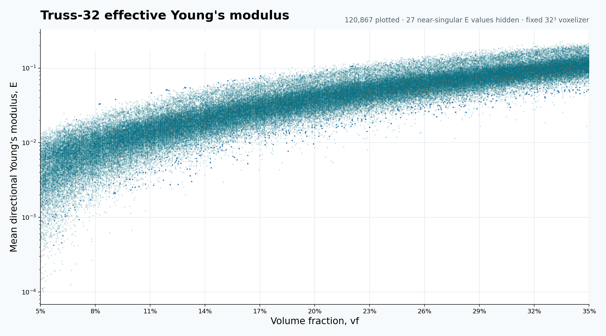
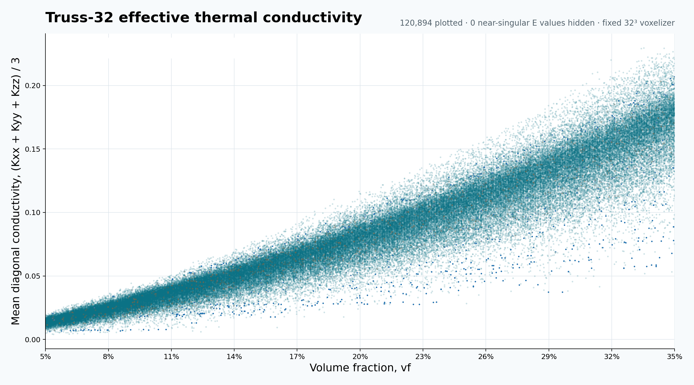

TOPOLOGY FIRST · NODE PERTURBATIONS
LatticeVerse
Loading topologies…
Loading topology skeletons…
No matching topologiesTry a different source or search term.
VOLUME FRACTION × EFFECTIVE PROPERTIES
Volume Fraction and Effective Properties

Download PNG

Download PNG